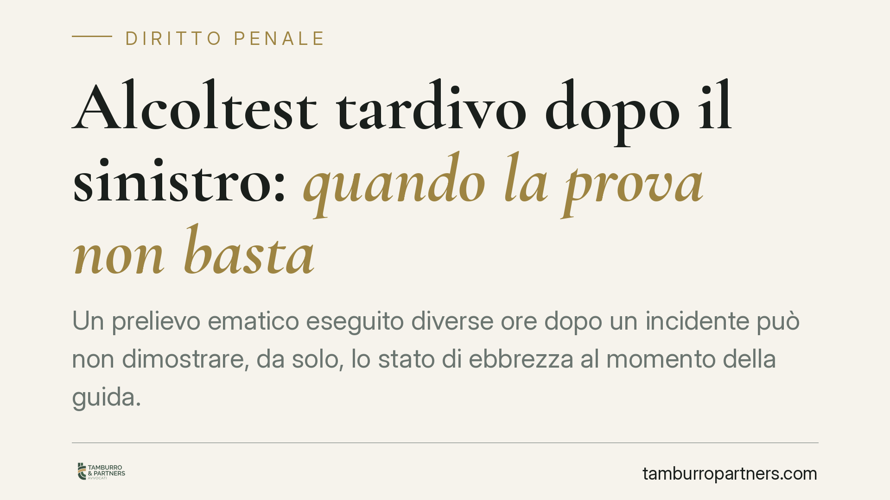

Alcoltest tardivo dopo il sinistro: quando la prova non basta
Un prelievo ematico eseguito diverse ore dopo un incidente può non dimostrare, da solo, lo stato di ebbrezza al momento della guida. Il dato va collegato ai sintomi rilevati sul posto e alla dinamica di assorbimento dell'alcol. Una recente pronuncia della Cassazione penale torna sul punto: ecco perché conta e cosa osservare in questi casi.

Il caso
Un automobilista coinvolto in un sinistro viene sottoposto a prelievo ematico in ospedale a diverse ore di distanza dall'evento. Sulla base di quel valore interviene la condanna per guida in stato di ebbrezza, poi contestata nei successivi gradi di giudizio. Il nodo è sempre lo stesso: il tasso alcolemico misurato *dopo* fotografa davvero la condizione del conducente *durante* la guida?
Nota sulla fonte. La pronuncia richiamata dalla stampa specializzata (indicata come sent. n. 22434/2026) non risulta, allo stato, verificabile negli estremi completi — sezione e data di deposito. La trattiamo quindi come orientamento da confermare. I principi di seguito esposti, in ogni caso, sono consolidati nella giurisprudenza della IV Sezione penale della Cassazione, competente in materia di reati stradali, e non dipendono dalla singola decisione.
Inquadramento normativo
L'art. 186 del Codice della Strada disciplina la guida in stato di ebbrezza. È importante distinguere le soglie:
- da 0,5 a 0,8 g/l: illecito amministrativo (sanzione pecuniaria e sospensione della patente, non reato);
- oltre 0,8 g/l: reato, con sanzioni crescenti nelle due fasce superiori (lett. b e c dell'art. 186).
La rilevanza penale, quindi, scatta solo sopra 0,8 g/l. Questo dato è decisivo quando il valore accertato è vicino alla soglia: un piccolo scostamento sposta la condotta dal penale all'amministrativo.
Il punto centrale è un altro. Il reato si consuma nel momento della guida, non al momento del prelievo. Occorre quindi dimostrare lo stato di ebbrezza in quell'istante. L'alcol nel sangue segue una dinamica nota: una fase di assorbimento, in cui il tasso sale dopo l'assunzione, e una successiva fase di eliminazione, in cui scende progressivamente nel tempo. Un prelievo eseguito ore dopo può cadere nella fase di eliminazione (e quindi sottostimare il valore reale al momento della guida) oppure, in casi di assunzione poco prima del sinistro, restituire un dato non ancora rappresentativo.
Lo strumento tecnico-scientifico spesso evocato per stimare retroattivamente il tasso è la curva di Widmark, un modello che calcola la concentrazione alcolemica in funzione del tempo. Si tratta di un criterio di matrice medico-legale e dottrinale, utilizzato dai consulenti tecnici: va impiegato con cautela, perché basato su parametri medi (peso, sesso, quantità assunta) non sempre adattabili al singolo caso. Non va attribuito automaticamente alla motivazione di una pronuncia se la sentenza non lo richiama espressamente.
Cosa cambia in concreto
Un principio emerge con chiarezza: l'alcoltest o il prelievo tardivo non sono sempre inutilizzabili, ma non sono autosufficienti. Da soli, a forte distanza temporale dalla guida, possono non bastare a fondare la condanna.
Diventa quindi rilevante il quadro complessivo:
- i sintomi riscontrati sul posto dagli operatori (eloquio, equilibrio, alito, stato di alterazione);
- l'intervallo temporale tra guida e prelievo;
- la dinamica del sinistro e l'eventuale assunzione di farmaci o altro in ambito ospedaliero.
In assenza di questi riscontri, un valore isolato e tardivo è un indizio debole. Dove il tasso è prossimo alla soglia degli 0,8 g/l, la questione si fa ancora più delicata, perché l'incertezza della misurazione può spostare l'intera qualificazione del fatto.
Cosa fare in concreto
- Recuperare l'orario esatto del sinistro e quello del prelievo, verificando l'intervallo trascorso.
- Acquisire la documentazione sanitaria completa (cartella clinica, referti, modalità del prelievo) presso la struttura ospedaliera.
- Verificare l'annotazione dei sintomi nel verbale degli operatori intervenuti sul posto.
- Controllare la soglia: accertare se il valore contestato superi gli 0,8 g/l o ricada nella fascia amministrativa.
I termini per impugnare sono perentori. La valutazione del dato alcolemico richiede competenze tecniche, spesso con il supporto di un consulente medico-legale: l'assistenza qualificata è opportuna per esaminare la correttezza e l'affidabilità dell'accertamento.
---
Contributo informativo a cura di Tamburro & Partners - Avv. Giuseppe Tamburro. Non costituisce parere legale.
Ogni condominio ha una storia a sé.
Se gestisci un'amministrazione e vuoi un confronto su una specifica questione condominiale, scrivi allo studio. Ti rispondiamo entro un giorno lavorativo.